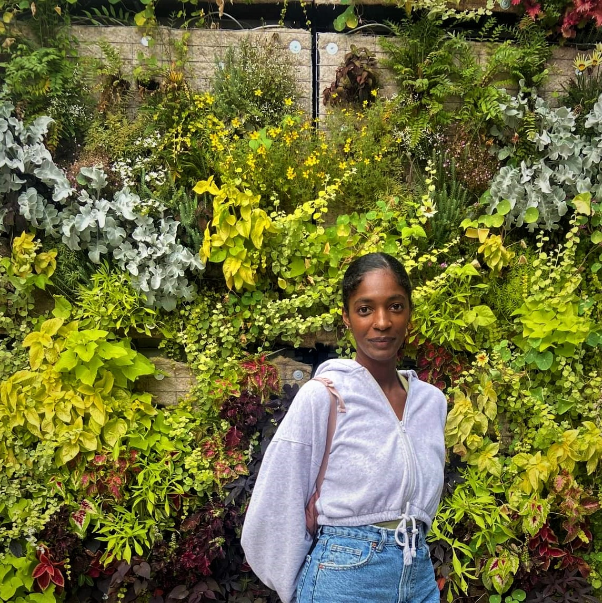

Hello, I'm Iesha!
She/ Her | Toronto/Ottawa | Student
Currently, pursing a diploma in Computer Programming Co-op at Algonquin College
Thanks to my educational and work experiences, I have learned technical, social and creative skills; which I get to apply to interests like thrifting, collecting old gaming systems , and exploring cultural events.